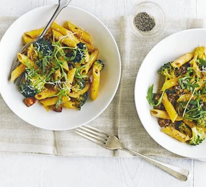

Salt and pepper chiken

Description
An easy Italian pasta with spicy, Spanish chorizo with greens and cream cheese.
Ingredients
- 400g penne
- small head of broccoli, broken into small florets
- 200g cooking chorizo, diced
- 2 garlic cloves, crushed
- 1 tbsp fennel seed
- 200g low-fat cream cheese with garlic & herbs
- parmesan and rocket leaves, to serve
Steps
- Cook the penne following pack instructions, adding the broccoli for the final 3 mins. When cooked, drain, reserving a splash of the cooking water.
- Meanwhile, fry the chorizo in a large dry frying pan until it starts to turn golden and release its oils. Add the garlic and fennel seeds, and cook for 1 min more. When the penne is cooked, tip it into the pan with the chorizo. Add the cream cheese, stir together until melted, adding a splash of the reserved cooking water so the sauce coats the pasta.
- Serve in bowls, scattered with a few rocket leaves and some grated Parmesan, if you like.